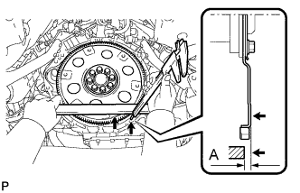
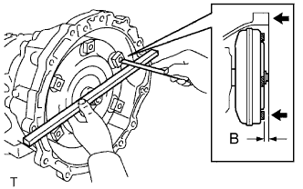
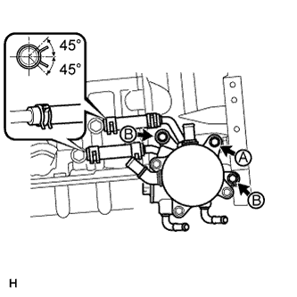
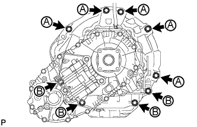
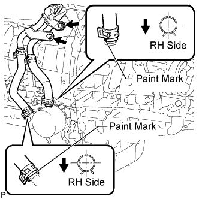
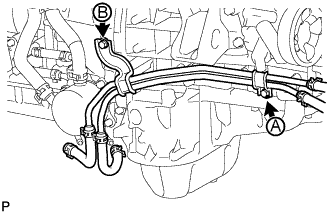
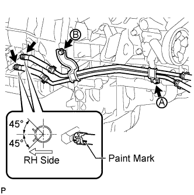
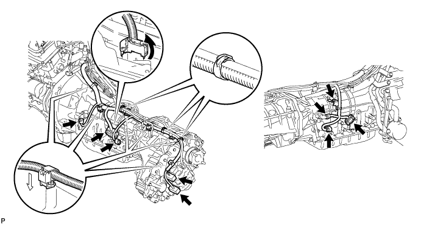
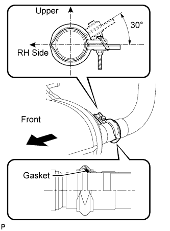

AUTOMATIC TRANSMISSION ASSEMBLY (for 1GR-FE) > INSTALLATION |
| 1. INSTALL TORQUE CONVERTER CLUTCH ASSEMBLY |
 |
Using a vernier caliper and straightedge, measure dimension A between the end surface of the engine and the torque converter contact surface of the drive plate.
Install the torque converter clutch to the transmission housing.
 |
Using a vernier caliper and straightedge, measure dimension B shown in the illustration and check that B is more than A measured in the first step.
| 2. INSTALL TRANSFER ASSEMBLY |
 |
Install the transfer with the 8 bolts.
 |
Install the transfer case lower protector with the 7 bolts.
Connect the clamp of the ground cable to the transfer case lower protector.
 |
Attach the 2 breather hose clamps to connect the transfer breather hose to the automatic transmission breather tube.
| 3. INSTALL HARNESS CLAMP BRACKET |
Install the 2 harness clamp brackets with the 2 bolts.
| 4. INSTALL TRANSMISSION OIL COOLER ASSEMBLY (w/o Air Cooled Transmission Oil Cooler) |
 |
Coat 2 new O-rings with ATF, and install them to the transmission oil cooler.
Align the transmission oil cooler with the transmission oil thermostat and assemble them with the 3 bolts.
Connect the 2 oil cooler hoses to the transmission oil thermostat with the 2 clips.
 |
Temporarily install the transmission oil cooler together with the transmission oil thermostat with the bolt A. Install the bolt B and tighten it to the specified torque. Then tighten the bolt A to the specified torque.
Connect the 2 hoses with the 2 clips.
| 5. INSTALL AUTOMATIC TRANSMISSION ASSEMBLY |
 |
Install the transmission with the 9 bolts.
| 6. CONNECT NO. 1 WATER BY-PASS PIPE (w/o Air Cooled Transmission Oil Cooler) |
 |
Connect the 2 water by-pass hoses with the 2 clips and install the water by-pass pipe with the 2 bolts.
| 7. CONNECT OIL COOLER TUBE (w/o Air Cooled Transmission Oil Cooler) |
 |
Temporarily install the oil cooler tube to the engine with the bolt A. Install the bolt B and tighten it to the specified torque. Then tighten the bolt A to the specified torque.
Connect the 2 transmission oil cooler hoses to the transmission oil cooler.
| 8. CONNECT OIL COOLER TUBE (w/ Air Cooled Transmission Oil Cooler) |
 |
Temporarily install the oil cooler tube to the engine with the bolt A. Install the bolt B and tighten it to the specified torque. Then tighten the bolt A to the specified torque.
Connect the 2 transmission oil cooler hoses to the oil cooler tube union.
| 9. CONNECT BREATHER PLUG HOSE |
 |
Connect the breather plug hose and attach the transfer breather hose.
| 10. INSTALL NO. 2 MANIFOLD STAY |
 |
Install the stay with the 3 bolts.
| 11. INSTALL MANIFOLD STAY |
 |
Install the stay with the 3 bolts.
| 12. CONNECT WIRE HARNESS AND CONNECTOR |
Connect the park/neutral position switch connector, transmission wire connector, 2 speed sensor connectors and 2 transfer control side connectors.

Connect the harness with the bolt.
Connect the 2 connector clamps and 6 harness clamps.
Tilt up the automatic transmission.
 |
Connect the ground cable with the bolt.
| 13. INSTALL REAR NO. 1 ENGINE MOUNTING INSULATOR |
 |
Install the rear engine mounting insulator to the transmission with the 4 bolts.
| 14. INSTALL NO. 2 FRAME CROSSMEMBER SUB-ASSEMBLY |
 |
Install the frame crossmember to the rear engine mounting insulator with the 4 bolts.
 |
Install the frame crossmember to the frame with the 4 bolts and 4 nuts.
 |
Install the engine mounting hole cover.
| 15. INSTALL DRIVE PLATE AND TORQUE CONVERTER CLUTCH SETTING BOLT |
 |
Turn the crankshaft to gain access to the installation locations of the 6 bolts and install each bolt while holding the crankshaft pulley setting bolt with a wrench.
 |
Install the flywheel housing side cover.
| 16. INSTALL STARTER ASSEMBLY (for 2.0 kW Type) |
 |
Install the starter with the 2 bolts.
 |
Connect the starter connector.
Connect the starter wire with the nut.
Connect the terminal cap.
| 17. INSTALL STARTER ASSEMBLY (for 1.6 kW Type) |
 |
Install the starter with the 2 bolts.
 |
Connect the starter connector.
Connect the starter wire with the nut.
Install the terminal cap.
| 18. CONNECT FLOOR SHIFT GEAR SHIFTING ROD SUB-ASSEMBLY |
 |
Connect the gear shifting rod to the transmission control shaft lever RH with the pin and a new clip.
| 19. INSTALL FRONT EXHAUST PIPE ASSEMBLY |
Install a new gasket and the front exhaust pipe to the exhaust manifold RH with 2 new nuts.
Connect the heated oxygen sensor connector.
| 20. INSTALL FRONT NO. 2 EXHAUST PIPE ASSEMBLY |
Install a new gasket and the front No. 2 exhaust pipe to the exhaust manifold LH with 2 new nuts.
 |
Connect the heated oxygen sensor connector.
| 21. INSTALL CENTER EXHAUST PIPE ASSEMBLY |
Using a vernier caliper, measure the free length of the compression spring.
Connect the center exhaust pipe to the 3 exhaust pipe supports.
Install 2 new gaskets to the front exhaust pipe and No. 2 front exhaust pipe.
Install the center exhaust pipe with the 4 bolts and 2 compression springs.
Set a new gasket to the center exhaust pipe.
 |
Connect the tailpipe to the center pipe with a new clamp.
| 22. INSTALL PROPELLER SHAFT ASSEMBLY |
Install the propeller shaft (Click here).
| 23. INSTALL FRONT PROPELLER SHAFT ASSEMBLY |
Install the front propeller shaft (Click here).
| 24. CONNECT CABLE TO NEGATIVE BATTERY TERMINAL |
| 25. ADD AUTOMATIC TRANSMISSION FLUID |
Add automatic transmission fluid (Click here).
| 26. INSPECT SHIFT LEVER POSITION |
When moving the shift lever from P to R with the engine switch on (IG) and the brake pedal depressed, make sure that it moves smoothly and correctly into position.
Check that the shift lever does not stop when moving the shift lever from R to P, and check that the shift lever does not stick when moving the shift lever from D to S.
Start the engine and make sure that the vehicle moves forward after moving the shift lever from N to D and moves rearward after moving the shift lever to R.
If there are no problems during the above inspections, perform the adjustment using the following procedures.
Move the shift lever to N
 |
Loosen the nut of the floor shift gear shifting rod. Then, with the lever of the floor shift assembly lightly pushed towards the rear of the vehicle, tighten the nut.
| 27. INSPECT FOR EXHAUST GAS LEAK |
| 28. INSTALL FRONT FENDER APRON SEAL LH |
 |
Install the fender apron seal with the 4 clips.
| 29. INSTALL FRONT FENDER APRON SEAL REAR LH |
 |
Install the fender apron seal with the 4 clips.
| 30. INSTALL FRONT FENDER APRON SEAL FRONT RH |
 |
Install the fender apron seal with the 3 clips.
| 31. INSTALL FRONT FENDER APRON SEAL REAR RH |
 |
Install the fender apron seal with the 4 clips.
| 32. INSTALL NO. 1 ENGINE UNDER COVER |
 |
Install the under cover with the 6 bolts.
| 33. INSTALL NO. 2 ENGINE UNDER COVER |
 |
Install the under cover with the 6 bolts.
| 34. INSTALL FRONT FENDER SPLASH SHIELD SUB-ASSEMBLY LH |
 |
Push in the clip indicated by the arrow in the illustration to install the fender splash shield.
Install the 3 bolts and screw.
| 35. INSTALL FRONT FENDER SPLASH SHIELD SUB-ASSEMBLY RH |
| 36. RESET MEMORY |
Perform the Reset Memory procedures (A/T initialization) (Click here).